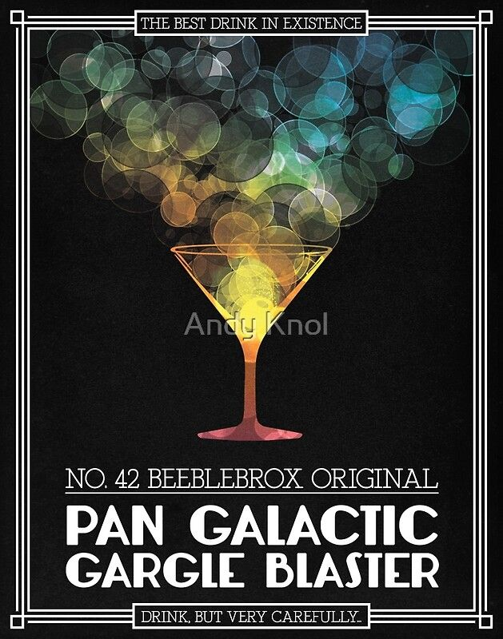

Pan Galactic Gargle Blaster

Description
Considered the "Best Drink in Existence" the Pan Galactic Gargle Blaster was invented by ex-Galactic President Zaphod Beeblebrox. Drinking one is likened to having your brains smashed out by a slice of lemon wrapped round a large gold brick.
Ingredients
- 1 bottle Ol' Janx Spirit
- 1 measure water from the seas of Santraginus V
- 3 cubes Arcturan Mega-gin (frozen)
- 4 litres Fallian marsh gas
- 1 measure Qualactin Hypermint extract
- 1 tooth of Algolian Suntiger
- Sprinkle of Zamphuor
- Olive for garnish
Directions
- Take juice from bottle of Ol' Janx Spirit and pout into it the sea water from Santraginus V.
- Allow the cubes of Arcturan Mega-Gin to melt into the mixture
- Bubble all 4 litres of Fallian marsh gas throught the mxture
- Over the back of a silver spoon float the Qualactin Hypermint extract
- Drop in Suntiger tooth; watch it dissolve
- Add a sprinkling of Zamphuor
- Garnish with olive
- Drink up! (very carefullly)